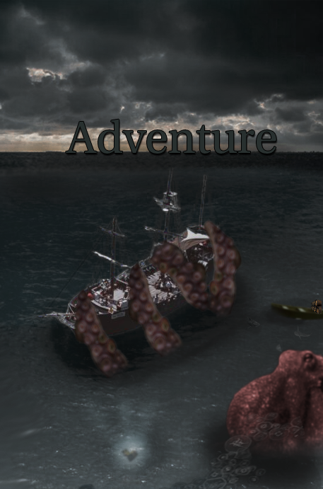

These are some of they many pieces I have completed in my DIG2000 class and personal projects! During this time I leearned many new skills including this website with HTML that I want to incorporate in my career. This page will be dedicated to my DIG2000 class.
︶︶︶ ⊹ ︶︶︶ ୨♡୧ ︶︶︶ ⊹ ︶︶︶
This is my Photoshop image where I used layers, mask and many other techniques.

Here is my Stop Motion video I created inspired by a Dragon Ball "What if" scenario with my own twist. I also mixed together some audios I found for the voices, KI sound, and background music.
This last piece is my Video project where I chose tan interview approach, with this project I focused on different camera shots and editing.